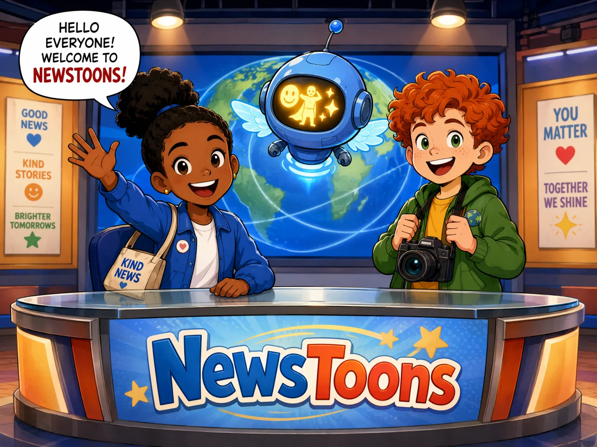
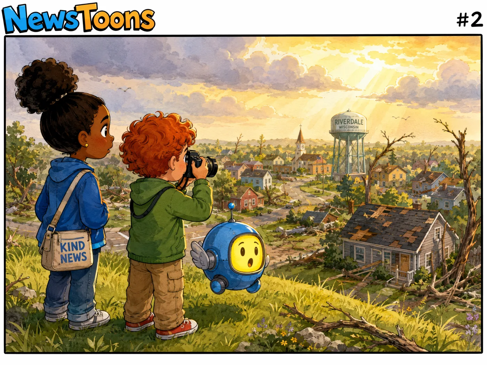
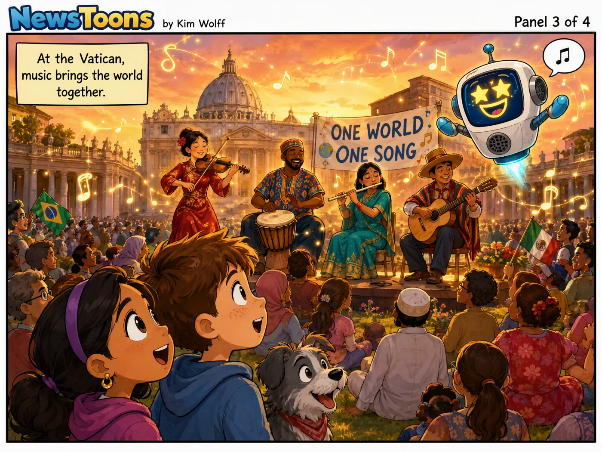
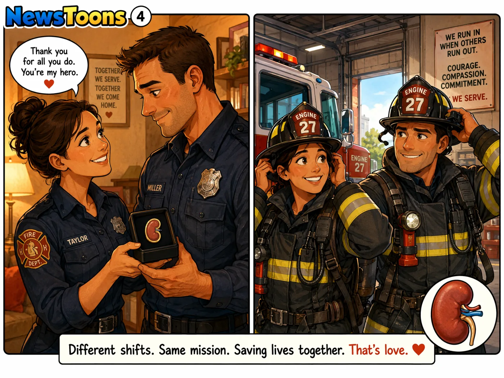
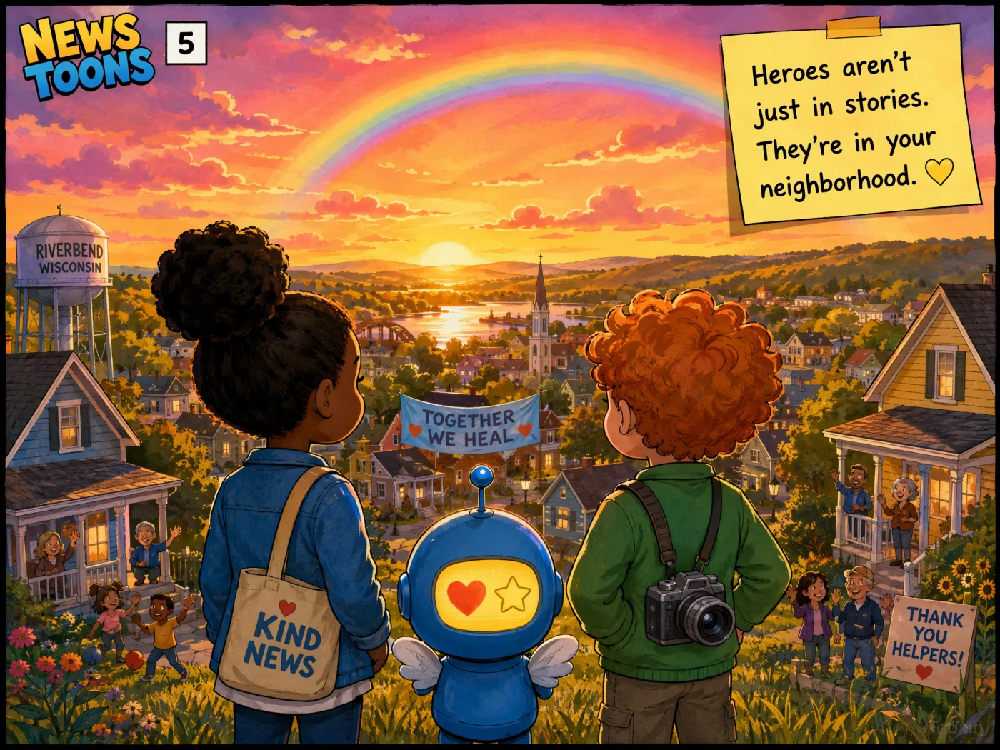
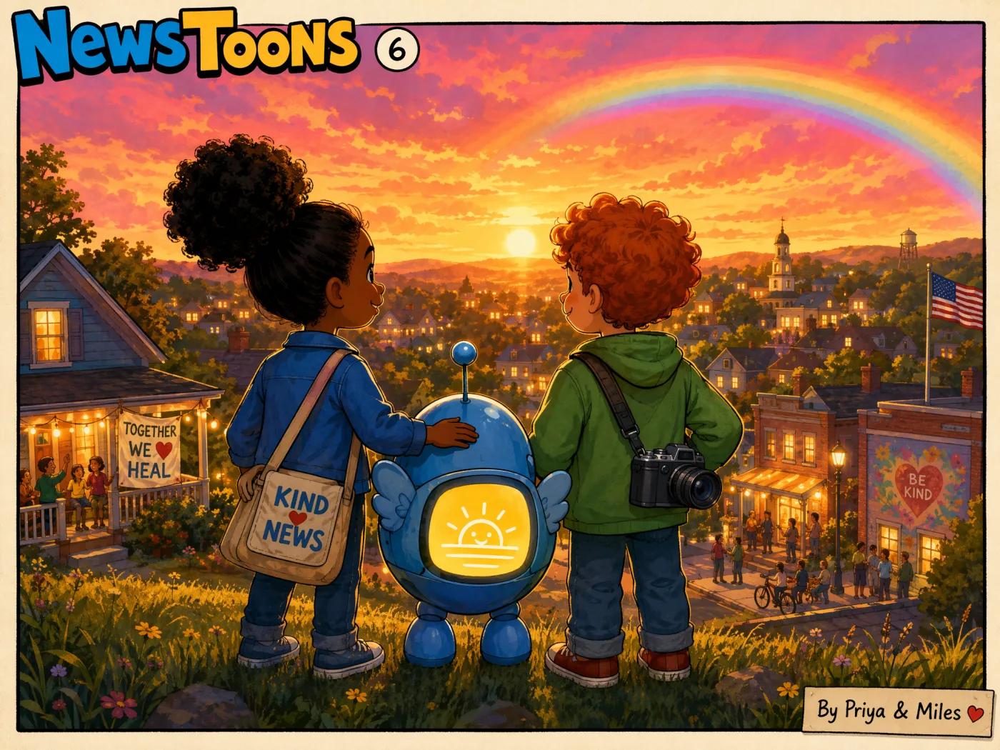

Episode 1: Peace, Storms & Garden Magic
Pope Leo concert for peaceWisconsin tornadoNortheast stormsCommunity garden






Today's news, tomorrow's adventure ✏️✨
For kids ages 6–10
Pope Leo concert for peaceWisconsin tornadoNortheast stormsCommunity garden





